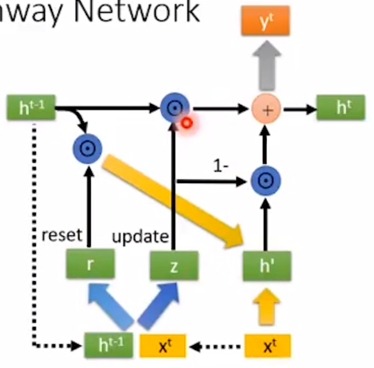
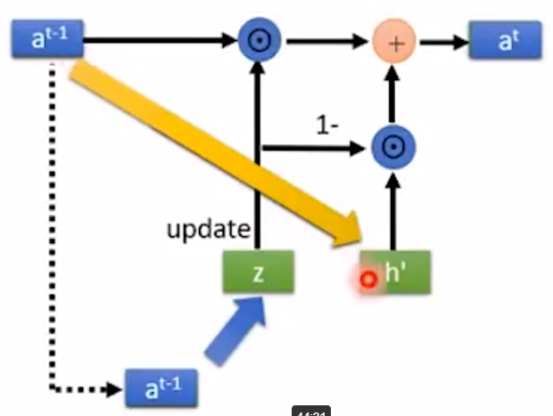
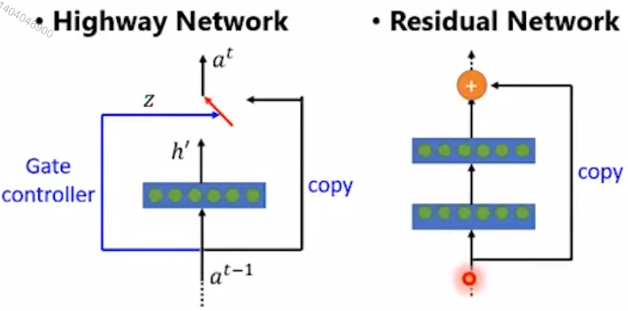
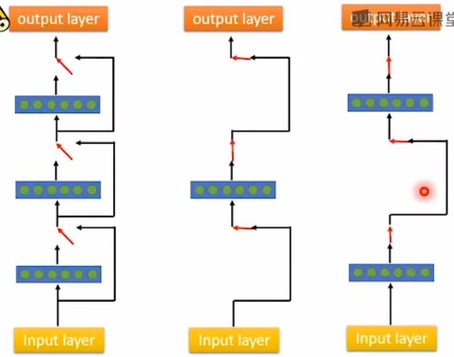

1. GRU VS Highway Netword
Highway Network基于GRU对Unit做了一些改进：
GRU
Highway Network Unit

主要改进为：
- 去掉 Input 和Output ，只有第一个Unit有Input，最后一个Unit有Output
- 输入换成
- 去掉reset gate，保证一定能进入下一个step
Highway Network Unit的计算过程：
这相当于在layer方向增加gate，以达到使layer更深的目的。
如果只接将z设置成0.5，就成了残差网络。

Highway Network可以看作是Network自动学到要有多少hidden layer。

根据data决定实际使用几层layer。